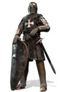

769132398 Crusader Ernulf de Hesdin
Korsriddare. Blev ca 60 år.
Far:
Född:
omkring 1038 Hesdin, Duchy of Lorraine, Frankrike. [1]
Död:
1098 Antiokia, Hatay Province, Turkiet. [1]
Barn med 769132399 Emmeline Ballon au Maine (de Normandy) (1038? - 1094)
Barn:
Noteringar
ARNOUL [Ernulf]de Hesdin (-Antiochia [1098]). Domesday Book skriver att " Ernulf de Hesdin " höll Farningham, Axton Hundred och Chelsfield, Helmestrei Hundred och Cliff and Haven i Shamwell Hundred, i Kent av biskopen av Bayeux, Combe i Hurstbourne Hundred i Hampshire/Berkshire, Newbury i Thatcham Hundred. i Berkshire, många markinnehav i Wiltshire, mark i Dorset inklusive Kington Magna och Melbury, Ruislip i Middlesex. " Ernulph de Hesding " donerade herrgården och kyrkan Ruislip, Middlesex till klostret Bec. De Historia Sancti Petri Gloucestriæ poster som " Ernulphus de Hesdyng " donerade " ecclesiam de Heythrop, Lynkbolt ... et ecclesiam de Kynemerforde ", bekräftas av "Patricius de Cadurcis et Matilda uxor eius ", och av " hæredum suorum " i " quatuor cartæ ", i den fjärde av vilka " Paganus filius Patricii " donerade " decimam domini sui de Kynermerforde ", att " Johannes episcopus " bekräftade och donerade " quatuor marcas annuas in ecclesia de Kynermerforde ", med bekräftelsen av " Rex Henricus senior...tempore Serlonis abbatis " [abbot från 1072 till 1104]. En stadga av Stephen King of England daterad 1138 bekräftade donationer till Gloucester St Peter inklusive donationen av " Ernulfi de Hesding et Emelina uxoris eius " av "ecclesiam de Nortuna "."...Ernulfus de Hesding " bevittnade stadgan daterad 27 januari 1091 under vilken William II, kung av England bekräftade statusen som Bath Abbey. The Chronicle of Hyde skriver att " Ernulfus de Hednith " orättvist anklagades för förräderi men framgångsrikt försvarade sig själv genom stridsrättegång (daterad till [1096] från sammanhanget), och lämnade på korståget och dog i Antiokia. " Patricius " donerade " v hidas terræ de Westona " till Bath St Peter, för själarna till " ... Arnulfi de Hesding ... ", genom charter daterad 14 september 1100.
Personhistoria
Bilder